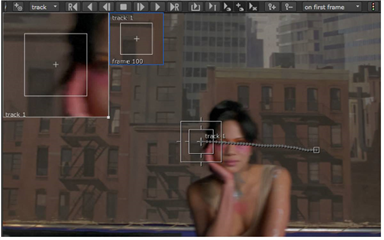

无论跟踪变得多么复杂，一些序列都不可避免地会导致问题。您可以执行许多预跟踪检查来帮助自动跟踪:
• 在放置你的跟踪锚之前，通过序列播放
• 寻找在整个序列的大部分中一致的特征
• 尽可能避免遮挡特征-请参阅 处理遮挡 .
您还可以调整的模式正在跟踪多久他们重新采样，抓起，使用 设置 标签和 自动跟踪 控制:
| 1。 | 尝试调整 最大迭代次数 , Epsilon ,和 Max_error 用于提高跟踪精度的控件: |
• 最大迭代次数 -跟踪算法停止搜索特征之前的最大迭代次数。
• Epsilon/resolution -假设跟踪器找到该功能的错误级别-没有进一步搜索更好的匹配。较高的值可能会导致更快但不太准确的跟踪。
• Max_error -跟踪器停止搜索特征的错误级别。
| 2. | 在自动跟踪子菜单中，启用 预测轨迹 使用动画路径来预测图案在下一帧中可能出现的位置。 |
注意: 如果启用预测时跟踪失败，请单击 清晰向前 按钮，或者重新跟踪遵循相同的错误路径。
| 3. | 设置类型的运动跟踪器会在 (可能) 扭曲类型 下拉列表: |
• 翻译
• 平移/旋转
• 平移/缩放
• 平移/旋转/缩放
• 仿射
仅翻译是最容易计算的，但是如果它旋转或缩放，可能会丢失模式。仿射可以用来试图保持直线和相对距离，补偿剪切。
| 4. | 尝试调整模式抓取行为，何时或多久应该从序列中抓取一个新的模式: |
• 在第一帧 -比较模式是从第一帧与模式锚抓住。如果特征平移但不旋转、缩放或剪切，则可以选择此选项。
• 每帧 -比较模式在序列中的每一帧都被抓取。此选项需要更长的时间来处理，但可以产生更平滑的轨迹。
• 每 n 帧 -允许您设置的帧间模式吸引使用 每 n 帧 控制。
• 如果以上错误 -当错误值大于错误值指定的值时，将捕获比较模式 当错误> 控制。将此控件设置为低值会更频繁地获取模式。
• 如果错误低于 -对比模式是抓住时的误差值小于指定的 当错误 < 控制。
• 自定义 -此选项启用所有模式抓取行为控件，允许您在捕获到序列中的比较模式时进行微调。
| 5. | 启用 停止跟踪时 使跟踪器在跟踪停止时在当前帧处重新抓取图案。 |
| 6. | 启用 当跟踪器被移动时 当跟踪锚移动时，使跟踪器在当前帧处重新抓取图案。 |
跟踪器的偏移功能允许您使用另一个特征的相对位置跟踪模糊特征，前提是两点之间的距离保持不变。
| 1。 | 正常跟踪图案，直到遮挡导致跟踪器失败。 |
缩放窗口有助于识别故障点。

| 2. | 通过播放序列来识别可能的偏移点 -- 一种与原始图案抓取保持等距离的图案。 |
| 3. | 按住 Ctrl / Cmd 并将跟踪锚拖到偏移位置。 |
偏移量记录在轨道列表中，并在查看器中以黄色突出显示。
| 4. |
通过单击 “向后 (Z)” 或 “向前 (V)” 按钮，继续正常跟踪。
|
Tracker 将两个轨迹组合成一个连续的轨迹。
| 5. | 使用清除后退和前进按钮 清除糟糕的关键帧。单击 “全部清除” 删除所有选定轨迹和关键帧，不包括手动放置的关键帧。 |
注意:
您可以通过单击重置跟踪锚模式和搜索区域
 .
.
|
|